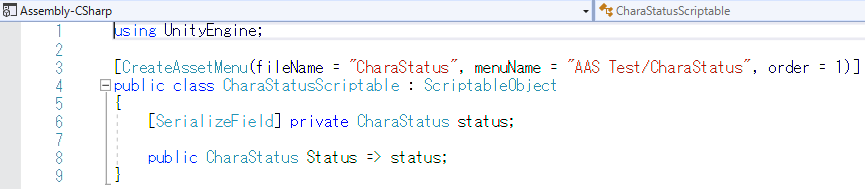

「Addressable Asset System」というものを使ってサーバーからスクリプタブルオブジェクトを取得する機構を作りました。
サーバーにゲームのデータを置いておくメリットは、サーバーの中身を変えるだけでゲームのアップデートが行えるというもので、 ゲーム本体をアップデートする必要がなく、主にソシャゲなどのアップデートを頻繁に行うゲームでは重宝されると思います。
まずはキャラクターステータスとしてスクリプタブルオブジェクトを作成します。
CharaStatus.cs
CharaStatusScriptable.cs
スクリプタブルオブジェクトを作成、Addressables Groupに登録
登録したスクリプタブルオブジェクトを一括読み込みするためにchara_statusとしてラベル付けします。
Addressables Groupをビルドします。
ビルド後出力されたファイル3つをサーバー上にアップロードします。
(今回はXFREEという無料サーバーを使いました。)
サーバーにアップロードしたアセットを読み込むためのスクリプトを書きます
(アップロードしたファイルのパスを指定するなどの工程は今回は端折ります)
CharaStatusDB.cs
Test.cs
Test.csを貼り付け、実行すると無事結果が返ってきました。